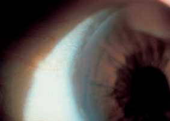

+ Loét Terrien

Hình: Thoái hóa giác mạc vùng rìa dạng Terrien gây loét
+ Terrien margin degeneration: thoái hóa vùng rìa Terrien, là một thoái hóa làm mỏng nhu mô giác mạc tiến triển, không triệu chứng ở cả hai mắt, khởi phát ở vùng rìa trên. Thường không rõ căn nguyên, xảy ra 75% trường hợp ở nam, 15% tiến triển đến thủng giác mạc

Hình: Thoái hóa vùng rìa Terrien

Hình: Thoái hóa vùng rìa Terrien gây thoái hóa toàn bộ giác mạc